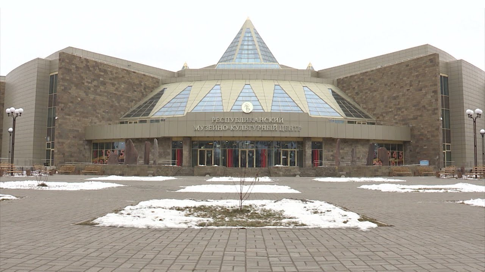
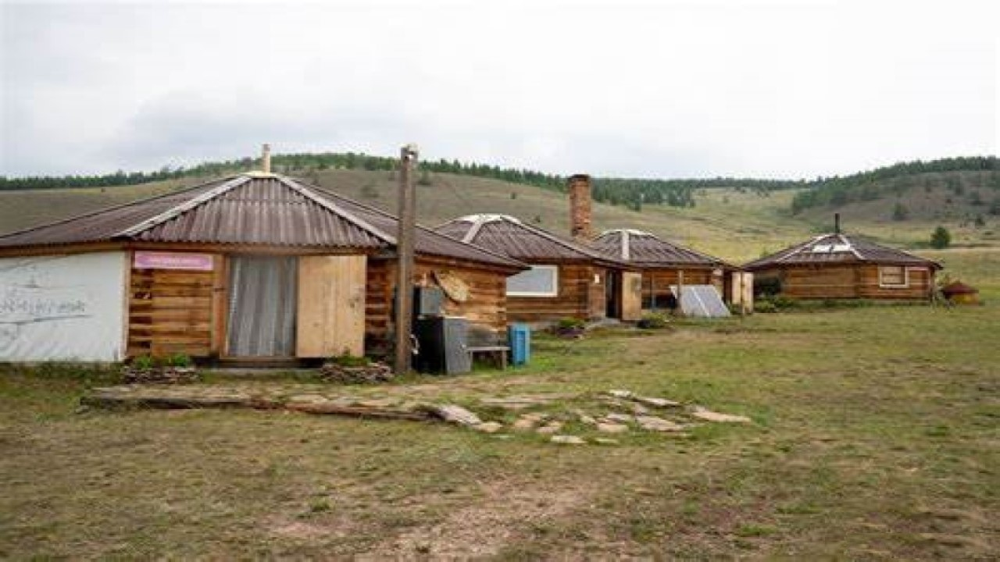
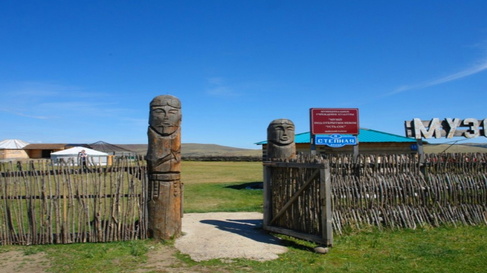
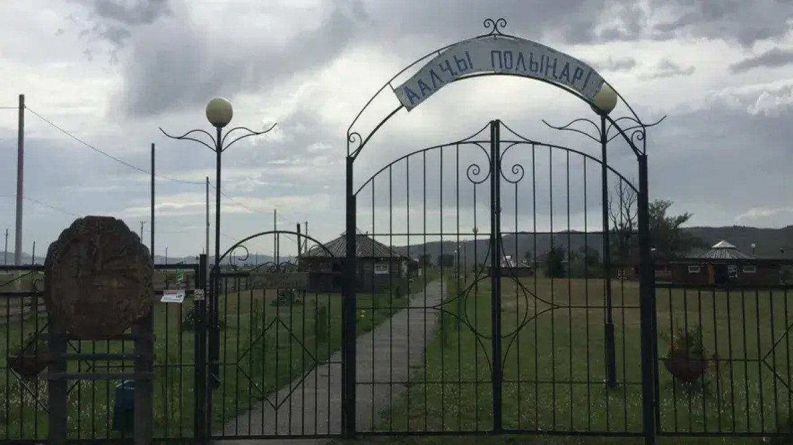
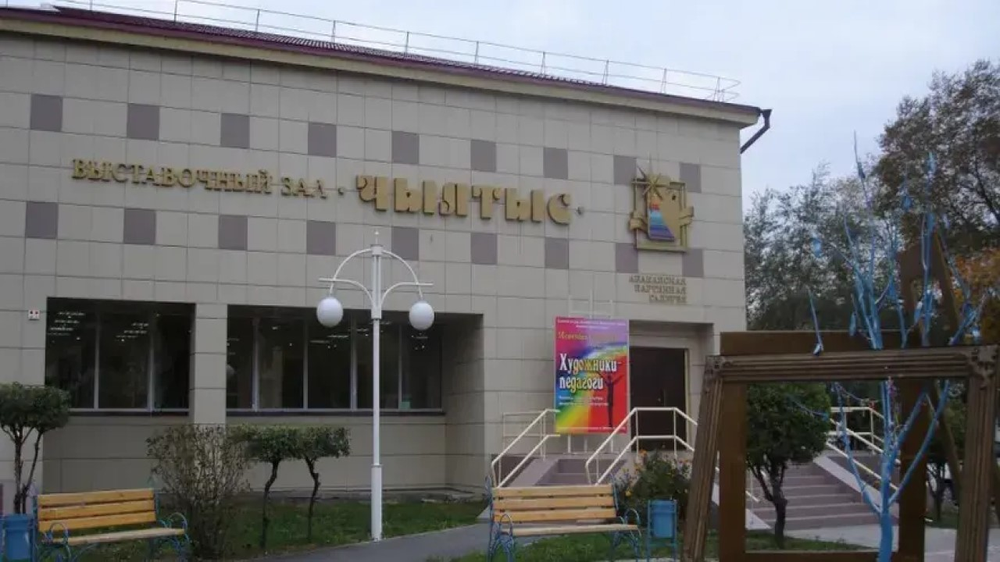

Хакасский национальный краеведческий музей имени Л. Р. Кызласова
Хакасский национальный краеведческий музей имени Л. Р. Кызласова является одним из крупнейших краеведческих музеев в Республике Хакасия. Он представляет богатую коллекцию предметов, отражающих историю и культуру хакасского народа.
Адрес: ул. Кызласова, 10, г. Абакан
Музей-заповедник "Сулеки"
Музей-заповедник "Сулеки" расположен в живописном уголке Республики Хакасия и является уникальным местом, где можно познакомиться с природой региона и его историей. Здесь находятся множество археологических находок и культурных памятников.
Адрес: с. Сулеки, Таштыпский район, Республика Хакасия
Музей под открытым небом "Усть-сос"
Музей под открытым небом "Усть-сос" расположен в удивительном месте, окруженном природой. Здесь можно увидеть древние памятники и артефакты, а также поучаствовать в экскурсиях и мастер-классах по ремесленным традициям хакасского народа.
Адрес: с. Усть-Сос, Усть-Абаканский район, Республика Хакасия
Музей-заповедник "Хуртуях тас"
Музей-заповедник "Хуртуях тас" - это уникальный археологический комплекс, расположенный на территории Республики Хакасия. Здесь можно увидеть множество древних артефактов и памятников культуры хакасского народа.
Адрес: с. Хуртуях тас, Бейский район, Республика Хакасия
Абаканская картинная галерея им. Ф.Е. Пронских
Абаканская картинная галерея им. Ф.Е. Пронских представляет собой центр современного искусства в Республике Хакасия. Здесь можно ознакомиться с работами художников-современников и проводимыми выставками.
Адрес: ул. Ленина, 50, г. Абакан
